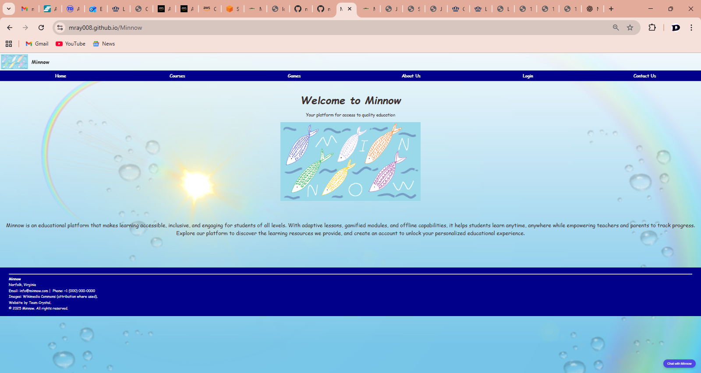
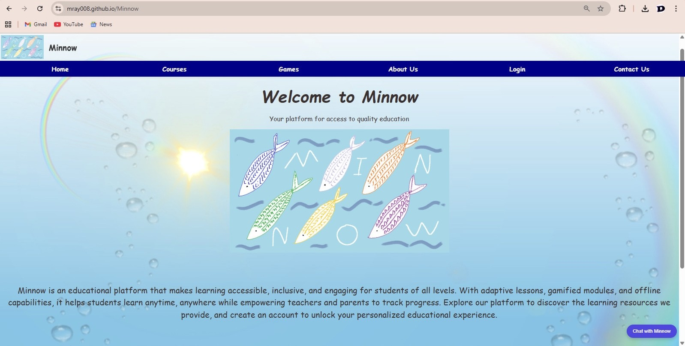
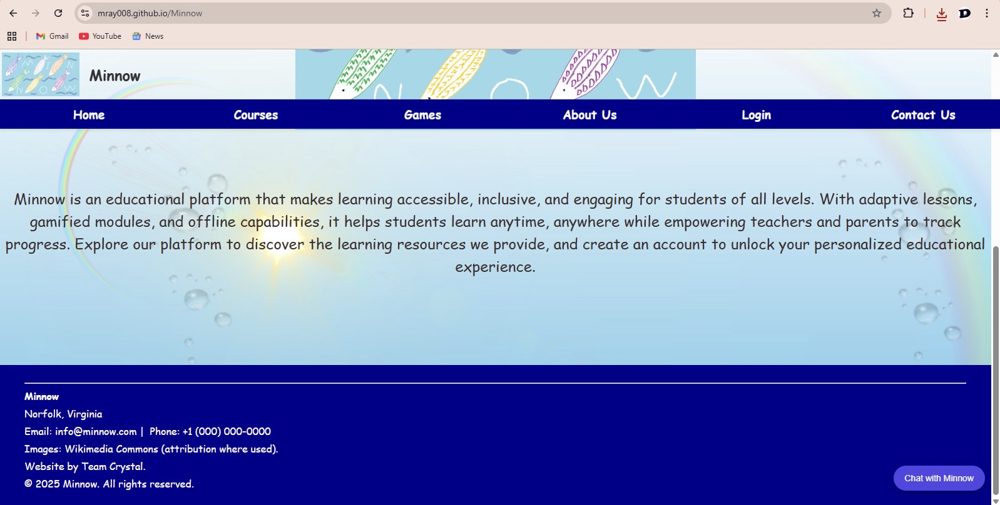

Navigating the Minnow Home Page
Landing Page Overview

Figure 1: The Minnow Landing Page is the first page users see when accessing the platform.
At the top left corner, users will find the fixed Minnow logo alongside the site title “Minnow.”
Directly beneath this header sits the main navigation bar that is also fixed, which provides quick access to the
Home, Courses, Games, About Us, Login, and Contact Us pages.
At the center of the screen, users are greeted with a large welcoming header,
“Welcome to Minnow,” followed by the subheader
“Your platform for access to quality education.”
Positioned below this text is a large version of the Minnow logo displayed prominently
in the middle of the page.
One important note:
The page was intentionally zoomed out during the demonstration so the entire homepage could be
viewed at once. Because of this zoom level, the footer does not appear to be stuck directly to
the bottom — even though, at normal zoom, it would sit where expected.
Homepage Description Area
Extended annotation for the visually impaired

Figure 2: Beneath the Minnow logo is a brief platform description. This paragraph introduces
Minnow as an educational tool designed to be accessible, inclusive, and engaging for all learners.
It highlights the platform’s adaptive lessons, gamification features, and offline capabilities
that help students learn anytime and anywhere. The text also explains that teachers and parents can
monitor progress through the platform. Users are encouraged to explore resources or create an account
to begin personalized learning.
Footer Information

Figure 3:At the bottom of the Landing Page is the site footer. This includes the prototype’s
placeholder contact information, such as location (Norfolk, Virginia), email (info@minnow.com), and phone number.
It also lists attribution for images sourced from Wikimedia Commons, credits the website to Team Crystal, and
displays the © 2025 Minnow copyright notice.
Finding the Minnow Chatbot

Figure 4: Just like the other pages on the site, the Landing Page includes the Minnow chatbot in the
bottom right corner. The chatbot appears as a round blue button labeled “Chat with Minnow.” Users can access
this tool at any time without leaving the page.
Please view the wiki page of the ChatBot for a
more detailed description of it's function.